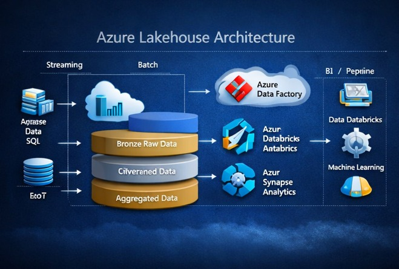

Kunal Krishnan
Consultant at Capgemini | Ex-Infosys | 5+ Years Experience
Consultant at Capgemini | Ex-Infosys | 5+ Years Experience
Azure Data Engineer with 5+ years experience designing scalable cloud data platforms and enterprise ETL pipelines using Azure Data Factory, Databricks, PySpark and Delta Lake.

Worked on data engineering solutions supporting the modernization of the European Road Network connecting 700+ stations across 45 countries.

Built distributed data pipelines processing railway logistics and operational data for analytics.

Working on enterprise data replication and analytics platforms using Fivetran HVR and Azure Data Factory.
Enterprise migration implementing Bronze, Silver, Gold architecture.
View Project
Understanding Bronze, Silver and Gold layers.
Partitioning, Z-Order and performance tuning.
Building scalable Azure Data Factory pipelines.
Email: kunalkrishnan966@gmail.com
Phone: +91 9914182048
Location: Samastipur, Bihar